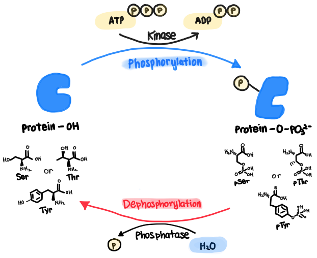

For my BSc thesis, I analysed 82 peer-reviewed studies to author a 5,000-word review characterising a theoretical presynaptic multi-phosphocode. This work mapped how the temporal balance between competing kinase cascades encodes the direction and magnitude of synaptic plasticity.

Presynaptic plasticity is a fundamental determinant of synaptic efficacy, yet the molecular mechanisms governing its expression remain incompletely understood. This dissertation examines the hypothesis that protein phosphorylation constitutes a unifying regulatory mechanism coordinating presynaptic plasticity across multiple timescales. Through systematic analysis of 82 peer-reviewed studies, phosphoregulation is traced across the synaptic vesicle cycle, from reserve pool mobilisation and active zone priming to Ca²⁺-triggered fusion and endocytic recovery. The evidence demonstrates that discrete kinase and phosphatase cascades – including PKA, CaMKII, CDK5, PKC, and ERK – act on convergent substrates such as Synapsin I, Munc18-1, RIM1α, and dynamin I to bidirectionally modulate release probability, vesicle pool size, and active zone architecture. A multi-phosphocode model is proposed, wherein combinatorial phosphorylation states – rather than single phosphosite events – encode short-term, long-term, and homeostatic plasticity.